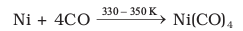
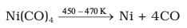
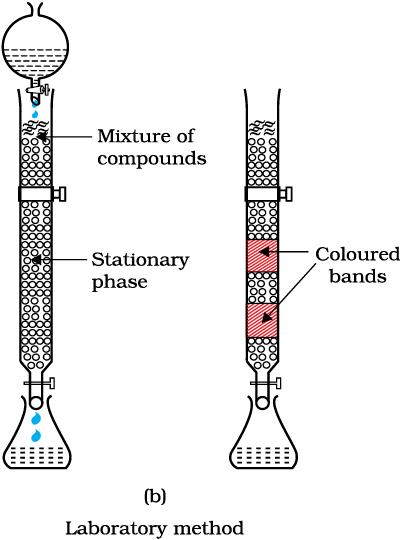

6.7 Refining
A metal extracted by any method is usually contaminated with some impurity. For obtaining metals of high purity, several techniques are used depending upon the differences in properties of the metal and the impurity. Some of them are listed below.
(a) Distillation (b) Liquation
(c) Electrolysis (d) Zone refining
(e) Vapour phase refining (f ) Chromatographic methods
These are described in detail here.
(a) Distillation
This is very useful for low boiling metals like zinc and mercury. The impure metal is evaporated to obtain the pure metal as distillate.
(b) Liquation
In this method a low melting metal like tin can be made to flow on a sloping surface. In this way it is separated from higher melting impurities.
(c) Electrolytic refining
In this method, the impure metal is made to act as anode. A strip of the same metal in pure form is used as cathode. They are put in a suitable electrolytic bath containing soluble salt of the same metal. The more basic metal remains in the solution and the less basic ones go to the anode mud. This process is also explained using the concept of electrode potential, over potential, and Gibbs energy which you have seen in previous sections. The reactions are:
Anode: M → Mn+ + ne–
Cathode: Mn+ + ne– → M (6.52)
Copper is refined using an electrolytic method. Anodes are of impure copper and pure copper strips are taken as cathode. The electrolyte is acidified solution of copper sulphate and the net result of electrolysis is the transfer of copper in pure form from the anode to the cathode:
Anode: Cu → Cu2+ + 2 e–
Cathode: Cu2+ + 2e– → Cu (6.53)
Impurities from the blister copper deposit as anode mud which contains antimony, selenium, tellurium, silver, gold and platinum; recovery of these elements may meet the cost of refining.
Zinc may also be refined this way.
(d) Zone refining
This method is based on the principle that the impurities are more soluble in the melt than in the solid state of the metal. A circular mobile heater is fixed at one end of a rod of the impure metal (Fig. 6.7). The molten zone moves along with the heater which is moved forward. As the heater moves forward, the pure metal crystallises out of the melt and the impurities pass on into the adjacent molten zone. The process is repeated several times and the heater is moved in the same direction. At one end, impurities get concentrated. This end is cut off. This method is very useful for producing semiconductor and other metals of very high purity, e.g., germanium, silicon, boron, gallium and indium.
Fig. 6.7: Zone refining process
(e) Vapour phase refining
In this method, the metal is converted into its volatile compound and collected elsewhere. It is then decomposed to give pure metal. So, the two requirements are:
(i) the metal should form a volatile compound with an available reagent,
(ii) the volatile compound should be easily decomposable, so that the recovery is easy.
Following examples will illustrate this technique.
Mond Process for Refining Nickel: In this process, nickel is heated in a stream of carbon monoxide forming a volatile complex, nickel tetracarbonyl:
 (6.54)
The carbonyl is subjected to higher temperature so that it is decomposed giving the pure metal:
 (6.55)
van Arkel Method for Refining Zirconium or Titanium: This method is very useful for removing all the oxygen and nitrogen present in the form of impurity in certain metals like Zr and Ti. The crude metal is heated in an evacuated vessel with iodine. The metal iodide being more covalent, volatilises:
Zr + 2I2 → ZrI4 (6.56)
The metal iodide is decomposed on a tungsten filament, electrically heated to about 1800K. The pure metal is thus deposited on the filament.
ZrI4 → Zr + 2I2 (6.57)
(f) Chromatographic methods
This method is based on the principle that different components of a mixture are differently adsorbed on an adsorbent. The mixture is put in a liquid or gaseous medium which is moved through the adsorbent. Different components are adsorbed at different levels on the column. Later the adsorbed components are removed (eluted) by using suitable solvents (eluant). Depending upon the physical state of the moving medium and the adsorbent material and also on the process of passage of the moving medium, the chromatographic method* is given the name. In one such method the column of Al2O3 is prepared in a glass tube and the moving medium containing a solution of the components is in liquid form. This is an example of column chromatography. This is very useful for purification of the elements which are available in minute quantities and the impurities are not very different in chemical properties from the element to be purified. There are several chromatographic techniques such as paper chromatography, column chromatography, gas chromatography, etc. Procedures followed in column chromatography have been depicted in Fig. 6.8.

Fig. 6.8: Schematic diagrams showing column chromatography
*Looking it the other way, chromatography in general, involves a mobile phase and a stationary phase. The sample or sample extract is dissolved in a mobile phase. The mobile phase may be a gas, a liquid or a supercritical fluid. The stationary phase is immobile and immiscible (like the Al 2 O 3 column in the example of column chromatography above). The mobile phase is then forced through the stationary phase. The mobile phase and the stationary phase are chosen such that components of the sample have different solubilities in the two phases. A component which is quite soluble in the stationary phase takes longer time to travel through it than a component which is not very soluble in the stationary phase but very soluble in the mobile phase. Thus sample components are separated from each other as they travel through the stationary phase. Depending upon the two phases and the way sample is inserted/injected, the chromatographic technique is named. These methods have been described in detail in Unit 12 of Class XI text book (12.8.5).